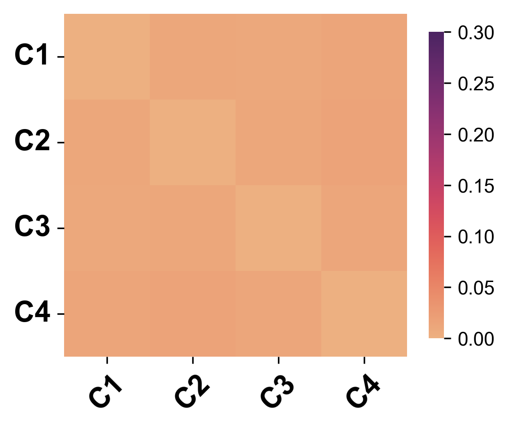
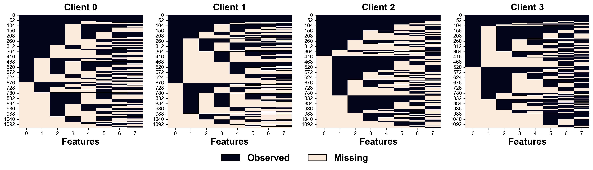
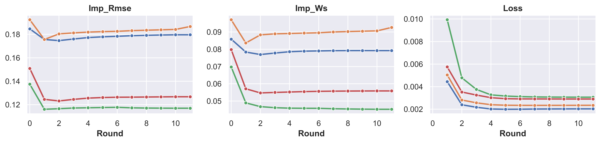
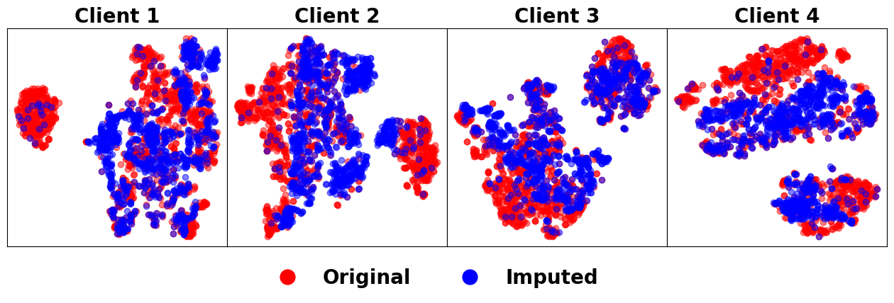
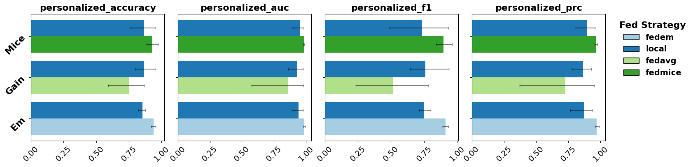

import numpy as np
import pandas as pd
import tabulate
import matplotlib.pyplot as plt
plt.rc('font', family='arial')
plt.rc('pdf', fonttype = 42)
plt.rc('ps', fonttype = 42)
Load Data
%load_ext autoreload
%autoreload 2
from fedimpute.data_prep import load_data, display_data
data, data_config = load_data("codrna")
display_data(data)
print("Data Dimensions: ", data.shape)
print("Data Config:\n", data_config)
+--------+--------+--------+--------+--------+--------+--------+--------+--------+
| X1 | X2 | X3 | X4 | X5 | X6 | X7 | X8 | y |
|--------+--------+--------+--------+--------+--------+--------+--------+--------|
| 0.7554 | 0.1364 | 0.0352 | 0.4132 | 0.6937 | 0.1591 | 0.3329 | 0.7154 | 1.0000 |
| 0.7334 | 0.7879 | 0.3819 | 0.3693 | 0.5619 | 0.4830 | 0.4351 | 0.5160 | 0.0000 |
| 0.7752 | 0.1364 | 0.1761 | 0.3290 | 0.7410 | 0.4259 | 0.4644 | 0.5268 | 1.0000 |
| 0.5905 | 0.7424 | 0.2720 | 0.2898 | 0.6920 | 0.3205 | 0.4019 | 0.6290 | 1.0000 |
| 0.7366 | 0.1212 | 0.2465 | 0.3290 | 0.7410 | 0.3249 | 0.5086 | 0.5631 | 1.0000 |
+--------+--------+--------+--------+--------+--------+--------+--------+--------+
Data Dimensions: (5000, 9)
Data Config:
{'target': 'y', 'task_type': 'classification', 'natural_partition': False}
Scenario Simulation
Basic Usage
%load_ext autoreload
%autoreload 2
from fedimpute.scenario import ScenarioBuilder
scenario_builder = ScenarioBuilder()
scenario_data = scenario_builder.create_simulated_scenario(
data, data_config, num_clients = 4, dp_strategy='iid-even', ms_scenario='mnar-heter'
)
print('Results Structure (Dict Keys):')
print(list(scenario_data.keys()))
scenario_builder.summarize_scenario()
The autoreload extension is already loaded. To reload it, use:
%reload_ext autoreload
Missing data simulation...
Results Structure (Dict Keys):
['clients_train_data', 'clients_test_data', 'clients_train_data_ms', 'clients_seeds', 'global_test_data', 'data_config', 'stats']
==================================================================
Scenario Summary
==================================================================
Total clients: 4
Global Test Data: (500, 9)
Missing Mechanism Category: MNAR (Self Masking Logit)
Clients Data Summary:
Train Test Miss MS Ratio MS Feature Seed
-- -------- ------- -------- ---------- ------------ ------
C1 (1125,9) (113,9) (1125,8) 0.47 8/8 6077
C2 (1125,9) (113,9) (1125,8) 0.51 8/8 577
C3 (1125,9) (113,9) (1125,8) 0.46 8/8 7231
C4 (1125,9) (113,9) (1125,8) 0.47 8/8 5504
==================================================================
Exploring Scenario
Data Heterogeneity
scenario_builder.visualize_data_heterogeneity(
client_ids=[0, 1, 2, 3],
distance_method='swd',
pca_col_threshold=20,
fontsize=18,
title=False,
save_path='./plots/data_heterogeneity.svg'
)

Missing Data Inspection
scenario_builder.visualize_missing_pattern(client_ids=[0, 1, 2, 3], save_path='./plots/ms_pattern.pdf')

scenario_builder.visualize_missing_distribution(
client_ids = [0, 1], feature_ids = [0, 1, 2, 3, 4],
stat = 'proportion', bins = 20, kde=True,
save_path='./plots/ms_distribution.pdf'
)

Running Federated Imputation
Basic Usage
%load_ext autoreload
%autoreload 2
from fedimpute.execution_environment import FedImputeEnv
env = FedImputeEnv(debug_mode=False)
env.configuration(imputer = 'mice', fed_strategy='fedmice')
env.setup_from_scenario_builder(scenario_builder = scenario_builder, verbose=1)
env.show_env_info()
env.run_fed_imputation()
The autoreload extension is already loaded. To reload it, use:
%reload_ext autoreload
[1mSetting up clients...[0m
[1mSetting up server...[0m
[1mSetting up workflow...[0m
[1mEnvironment setup complete.[0m
============================================================
Environment Information:
============================================================
Workflow: ICE (Imputation via Chain Equation)
Clients:
- Client 0: imputer: mice, fed-strategy: fedmice
- Client 1: imputer: mice, fed-strategy: fedmice
- Client 2: imputer: mice, fed-strategy: fedmice
- Client 3: imputer: mice, fed-strategy: fedmice
Server: fed-strategy: fedmice
============================================================
ICE Iterations: 0%| | 0/20 [00:00<?, ?it/s]
Feature_idx: 0%| | 0/8 [00:00<?, ?it/s]
Feature_idx: 0%| | 0/8 [00:00<?, ?it/s]
Feature_idx: 0%| | 0/8 [00:00<?, ?it/s]
Feature_idx: 0%| | 0/8 [00:00<?, ?it/s]
Feature_idx: 0%| | 0/8 [00:00<?, ?it/s]
Feature_idx: 0%| | 0/8 [00:00<?, ?it/s]
Feature_idx: 0%| | 0/8 [00:00<?, ?it/s]
Feature_idx: 0%| | 0/8 [00:00<?, ?it/s]
Feature_idx: 0%| | 0/8 [00:00<?, ?it/s]
Feature_idx: 0%| | 0/8 [00:00<?, ?it/s]
Feature_idx: 0%| | 0/8 [00:00<?, ?it/s]
Monitoring Imputation Progress
env.tracker.visualize_imputation_process()

Evaluation
Imputation Quality
%load_ext autoreload
%autoreload 2
from fedimpute.evaluation import Evaluator
X_trains = env.get_data(client_ids='all', data_type = 'train')
X_train_imps = env.get_data(client_ids='all', data_type = 'train_imp')
X_train_masks = env.get_data(client_ids='all', data_type = 'train_mask')
evaluator = Evaluator()
ret = evaluator.evaluate_imp_quality(
X_train_imps = X_train_imps,
X_train_origins = X_trains,
X_train_masks = X_train_masks,
metrics = ['rmse', 'nrmse', 'sliced-ws']
)
evaluator.show_imp_results()
The autoreload extension is already loaded. To reload it, use:
%reload_ext autoreload
================================================
Imputation Quality
================================================
rmse nrmse sliced-ws
---------- ---------- ---------- -----------
Client 1 0.172 0.480 0.076
Client 2 0.184 0.534 0.090
Client 3 0.120 0.332 0.047
Client 4 0.128 0.359 0.058
---------- ---------- ---------- ----------
Average 0.151 0.426 0.068
Std 0.028 0.083 0.016
================================================
X_trains = env.get_data(client_ids='all', data_type = 'train')
X_train_imps = env.get_data(client_ids='all', data_type = 'train_imp')
evaluator.tsne_visualization(
X_imps = X_train_imps,
X_origins = X_trains,
seed = 0
)
Evaluating TSNE for Client 1 ...
Evaluating TSNE for Client 2 ...
Evaluating TSNE for Client 3 ...
Evaluating TSNE for Client 4 ...

Local Prediction
X_trains, y_trains = env.get_data(client_ids='all', data_type = 'train', include_y=True)
X_tests, y_tests = env.get_data(client_ids='all', data_type = 'test', include_y=True)
X_train_imps = env.get_data(client_ids='all', data_type = 'train_imp')
data_config = env.get_data(data_type = 'config')
ret = evaluator.evaluate_local_pred(
X_train_imps = X_train_imps,
X_train_origins = X_trains,
y_trains = y_trains,
X_tests = X_tests,
y_tests = y_tests,
data_config = data_config,
model = 'nn',
seed= 0
)
evaluator.show_local_pred_results()
Clients: 0%| | 0/4 [00:00<?, ?it/s]
[1mEarly stopping at epoch 593[0m
[1mEarly stopping at epoch 287[0m
[1mEarly stopping at epoch 583[0m
[1mEarly stopping at epoch 360[0m
==========================================================
Downstream Prediction (Local)
==========================================================
accuracy f1 auc prc
---------- ---------- ---------- ---------- ----------
Client 1 0.788 0.636 0.861 0.741
Client 2 0.894 0.824 0.953 0.935
Client 3 0.929 0.895 0.976 0.969
Client 4 0.752 0.481 0.854 0.760
---------- ---------- ---------- ---------- ----------
Average 0.841 0.709 0.911 0.851
Std 0.073 0.162 0.054 0.102
==========================================================
Federated Prediction
X_train_imps = env.get_data(client_ids='all', data_type = 'train_imp')
X_trains, y_trains = env.get_data(
client_ids='all', data_type = 'train', include_y=True
)
X_tests, y_tests = env.get_data(
client_ids='all', data_type = 'test', include_y=True
)
X_global_test, y_global_test = env.get_data(
data_type = 'global_test', include_y = True
)
data_config = env.get_data(data_type = 'config')
ret = evaluator.evaluate_fed_pred(
X_train_imps = X_train_imps,
X_train_origins = X_trains,
y_trains = y_trains,
X_tests = X_tests,
y_tests = y_tests,
X_test_global = X_global_test,
y_test_global = y_global_test,
data_config = data_config,
train_params = {
'global_epoch': 100,
'local_epoch': 10,
'fine_tune_epoch': 200,
},
seed= 0
)
evaluator.show_fed_pred_results()
Global Epoch: 0%| | 0/100 [00:00<?, ?it/s]
[1mEpoch 0 - average loss: 0.6716053117724026[0m
[1mEpoch 10 - average loss: 0.5709273157750859[0m
[1mEpoch 20 - average loss: 0.48411076998009406[0m
[1mEpoch 30 - average loss: 0.4436344894416192[0m
[1mEpoch 40 - average loss: 0.43356676005265293[0m
[1mEpoch 50 - average loss: 0.4266376635607551[0m
[1mEpoch 60 - average loss: 0.4221082873204175[0m
[1mEarly stopping at epoch 65[0m
[1mEpoch 70 - average loss: 0.40617619396424764[0m
[1mEarly stopping at epoch 71[0m
[1mEarly stopping at epoch 74[0m
[1mEpoch 80 - average loss: 0.3788260501973769[0m
[1mEarly stopping at epoch 81[0m
[1mEarly stopping at epoch 100[0m
[1mEarly stopping at epoch 121[0m
[1mEarly stopping at epoch 125[0m
===============================================================
Downstream Prediction (Fed)
===============================================================
Personalized accuracy f1 auc prc
-------------- ---------- ---------- ---------- ----------
Client 1 0.885 0.831 0.958 0.900
Client 2 0.920 0.883 0.982 0.956
Client 3 0.885 0.835 0.975 0.951
Client 4 0.867 0.819 0.973 0.961
---------- ---------- ---------- ---------- ----------
Global 0.906 0.862 0.969 0.941
===============================================================
All In One
%load_ext autoreload
%autoreload 2
from fedimpute.evaluation import Evaluator
evaluator = Evaluator()
ret = evaluator.evaluate_all(
env, metrics = ['imp_quality', 'pred_downstream_local', 'pred_downstream_fed']
)
evaluator.show_results_all()
[1mEvaluating imputation quality...[0m
[1mImputation quality evaluation completed.[0m
[1mEvaluating downstream prediction...[0m
Clients: 0%| | 0/4 [00:00<?, ?it/s]
[1mEarly stopping at epoch 593[0m
[1mEarly stopping at epoch 287[0m
[1mEarly stopping at epoch 583[0m
[1mEarly stopping at epoch 360[0m
[1mDownstream prediction evaluation completed.[0m
[1mEvaluating federated downstream prediction...[0m
Global Epoch: 0%| | 0/100 [00:00<?, ?it/s]
[1mEpoch 0 - average loss: 0.6716053117724026[0m
[1mEpoch 10 - average loss: 0.5709273157750859[0m
[1mEpoch 20 - average loss: 0.48411076998009406[0m
[1mEpoch 30 - average loss: 0.4436344894416192[0m
[1mEpoch 40 - average loss: 0.43356676005265293[0m
[1mEpoch 50 - average loss: 0.4266376635607551[0m
[1mEpoch 60 - average loss: 0.4221082873204175[0m
[1mEarly stopping at epoch 65[0m
[1mEpoch 70 - average loss: 0.40617619396424764[0m
[1mEarly stopping at epoch 71[0m
[1mEarly stopping at epoch 74[0m
[1mEpoch 80 - average loss: 0.3788260501973769[0m
[1mEarly stopping at epoch 81[0m
[1mEarly stopping at epoch 100[0m
[1mEarly stopping at epoch 121[0m
[1mEarly stopping at epoch 125[0m
[1mFederated downstream prediction evaluation completed.[0m
[1mEvaluation completed.[0m
| imp_quality | pred_downstream_local | pred_downstream_fed | |||||||||||||
|---|---|---|---|---|---|---|---|---|---|---|---|---|---|---|---|
| rmse | nrmse | sliced-ws | accuracy | f1 | auc | prc | personalized_accuracy | personalized_f1 | personalized_auc | personalized_prc | global_accuracy | global_f1 | global_auc | global_prc | |
| 0 | 0.172028 | 0.479522 | 0.075509 | 0.787611 | 0.636364 | 0.860953 | 0.741470 | 0.884956 | 0.831169 | 0.958037 | 0.900117 | 0.906 | 0.86217 | 0.968807 | 0.94098 |
| 1 | 0.184269 | 0.533933 | 0.090226 | 0.893805 | 0.823529 | 0.952703 | 0.934722 | 0.920354 | 0.883117 | 0.981508 | 0.956229 | 0.906 | 0.86217 | 0.968807 | 0.94098 |
| 2 | 0.119754 | 0.331969 | 0.047390 | 0.929204 | 0.894737 | 0.975818 | 0.969489 | 0.884956 | 0.835443 | 0.975462 | 0.951035 | 0.906 | 0.86217 | 0.968807 | 0.94098 |
| 3 | 0.128211 | 0.359113 | 0.057849 | 0.752212 | 0.481481 | 0.854196 | 0.760059 | 0.867257 | 0.819277 | 0.972617 | 0.961279 | 0.906 | 0.86217 | 0.968807 | 0.94098 |
Export Evaluation Results in Different Format
evaluator.export_results(format = 'dataframe')
| imp_quality | pred_downstream_local | pred_downstream_fed | |||||||||||||
|---|---|---|---|---|---|---|---|---|---|---|---|---|---|---|---|
| rmse | nrmse | sliced-ws | accuracy | f1 | auc | prc | personalized_accuracy | personalized_f1 | personalized_auc | personalized_prc | global_accuracy | global_f1 | global_auc | global_prc | |
| 0 | 0.172028 | 0.479522 | 0.075509 | 0.787611 | 0.636364 | 0.860953 | 0.741470 | 0.884956 | 0.831169 | 0.958037 | 0.900117 | 0.906 | 0.86217 | 0.968807 | 0.94098 |
| 1 | 0.184269 | 0.533933 | 0.090226 | 0.893805 | 0.823529 | 0.952703 | 0.934722 | 0.920354 | 0.883117 | 0.981508 | 0.956229 | 0.906 | 0.86217 | 0.968807 | 0.94098 |
| 2 | 0.119754 | 0.331969 | 0.047390 | 0.929204 | 0.894737 | 0.975818 | 0.969489 | 0.884956 | 0.835443 | 0.975462 | 0.951035 | 0.906 | 0.86217 | 0.968807 | 0.94098 |
| 3 | 0.128211 | 0.359113 | 0.057849 | 0.752212 | 0.481481 | 0.854196 | 0.760059 | 0.867257 | 0.819277 | 0.972617 | 0.961279 | 0.906 | 0.86217 | 0.968807 | 0.94098 |
ret = evaluator.export_results(format = 'dict-dataframe')
ret['imp_quality']
| rmse | nrmse | sliced-ws | |
|---|---|---|---|
| 0 | 0.172028 | 0.479522 | 0.075509 |
| 1 | 0.184269 | 0.533933 | 0.090226 |
| 2 | 0.119754 | 0.331969 | 0.047390 |
| 3 | 0.128211 | 0.359113 | 0.057849 |
ret = evaluator.export_results(format = 'dict-dataframe')
ret['pred_downstream_fed']
| personalized_accuracy | personalized_f1 | personalized_auc | personalized_prc | global_accuracy | global_f1 | global_auc | global_prc | |
|---|---|---|---|---|---|---|---|---|
| 0 | 0.884956 | 0.831169 | 0.958037 | 0.900117 | 0.906 | 0.86217 | 0.968807 | 0.94098 |
| 1 | 0.920354 | 0.883117 | 0.981508 | 0.956229 | 0.906 | 0.86217 | 0.968807 | 0.94098 |
| 2 | 0.884956 | 0.835443 | 0.975462 | 0.951035 | 0.906 | 0.86217 | 0.968807 | 0.94098 |
| 3 | 0.867257 | 0.819277 | 0.972617 | 0.961279 | 0.906 | 0.86217 | 0.968807 | 0.94098 |
Benchmarking Pipeline
%load_ext autoreload
%autoreload 2
from fedimpute.pipeline import FedImputePipeline
pipeline = FedImputePipeline()
pipeline.setup(
id = 'test_pipeline',
fed_imp_configs = [
('em', ['local', 'fedem'], {}, [{}, {}]),
('mice', ['local', 'fedmice'], {}, [{}, {}]),
('gain', ['local', 'fedavg'], {}, [{}, {}]),
],
persist_data = False,
description = 'test'
)
pipeline.pipeline_setup_summary()
The autoreload extension is already loaded. To reload it, use:
%reload_ext autoreload
==============================================================
Experiment ID: test_pipeline
==============================================================
Description: test
Persist Data: False
Evaluation: ['imp_quality', 'local_pred', 'fed_pred']
Seed: 100330201
--------------------------------------------------------------
Imputer Fed Strategy Imp Params Strategy Params
-- --------- -------------- ------------ -----------------
0 em local {} {}
1 em fedem {} {}
2 mice local {} {}
3 mice fedmice {} {}
4 gain local {} {}
5 gain fedavg {} {}
==============================================================
pipeline.run_pipeline(
simulator, repeats = 1, verbose = 1
)
----------------------------------------------------------------------------------------------------
Running experiment: 1 / 6
Imputer: em | Fed Strategy: local |Imp Params: {} | Strategy Params: {}
[1mImputation Start ...[0m
[1mInitial: rmse - 0.2602 ws - 0.1349[0m
Clients: 0%| | 0/4 [00:00<?, ?it/s]
EM converged after 3 iterations.
EM converged after 2 iterations.
EM converged after 3 iterations.
EM converged after 4 iterations.
[1mFinal: rmse - 0.2505 ws - 0.1289[0m
[1mRunning time: 2.6570 seconds[0m
Clients: 0%| | 0/4 [00:00<?, ?it/s]
[1mEarly stopping at epoch 428[0m
[1mEarly stopping at epoch 309[0m
[1mEarly stopping at epoch 576[0m
[1mEarly stopping at epoch 243[0m
Global Epoch: 0%| | 0/100 [00:00<?, ?it/s]
[1mEpoch 0 - average loss: 0.6852318048477173[0m
[1mEpoch 10 - average loss: 0.6026552538661396[0m
[1mEpoch 20 - average loss: 0.5766739832127796[0m
[1mEpoch 30 - average loss: 0.5591664016246796[0m
[1mEpoch 40 - average loss: 0.5472374050056232[0m
[1mEpoch 50 - average loss: 0.5470328948953572[0m
[1mEarly stopping at epoch 58[0m
[1mEpoch 60 - average loss: 0.5348919396306954[0m
[1mEpoch 70 - average loss: 0.5332270299687104[0m
[1mEarly stopping at epoch 71[0m
[1mEarly stopping at epoch 72[0m
[1mEpoch 80 - average loss: 0.5302949845790863[0m
[1mEarly stopping at epoch 88[0m
[1mEarly stopping at epoch 188[0m
[1mEarly stopping at epoch 197[0m
[1mEarly stopping at epoch 151[0m
----------------------------------------------------------------------------------------------------
Running experiment: 2 / 6
Imputer: em | Fed Strategy: fedem |Imp Params: {} | Strategy Params: {}
[1mImputation Start ...[0m
[1mInitial: rmse - 0.1832 ws - 0.0911[0m
Iterations: 0%| | 0/100 [00:00<?, ?it/s]
[1mEpoch 0: rmse - 0.1561 ws - 0.0746[0m
[1mEpoch 1: rmse - 0.1513 ws - 0.0695[0m
[1mEpoch 2: rmse - 0.1490 ws - 0.0670[0m
[1mEpoch 3: rmse - 0.1477 ws - 0.0656[0m
[1mEpoch 4: rmse - 0.1470 ws - 0.0648[0m
[1mEpoch 5: rmse - 0.1465 ws - 0.0642[0m
[1mEpoch 6: rmse - 0.1462 ws - 0.0639[0m
[1mEpoch 7: rmse - 0.1462 ws - 0.0638[0m
[1mAll clients converged, iteration 8[0m
[1mFinal: rmse - 0.1462 ws - 0.0638[0m
[1mRunning time: 10.0379 seconds[0m
Clients: 0%| | 0/4 [00:00<?, ?it/s]
[1mEarly stopping at epoch 596[0m
[1mEarly stopping at epoch 540[0m
[1mEarly stopping at epoch 635[0m
[1mEarly stopping at epoch 342[0m
Global Epoch: 0%| | 0/100 [00:00<?, ?it/s]
[1mEpoch 0 - average loss: 0.6680521088487962[0m
[1mEpoch 10 - average loss: 0.5459251565968289[0m
[1mEpoch 20 - average loss: 0.49220619745114275[0m
[1mEpoch 30 - average loss: 0.4334482230684336[0m
[1mEpoch 40 - average loss: 0.4074271807775778[0m
[1mEpoch 50 - average loss: 0.40386741827515993[0m
[1mEarly stopping at epoch 56[0m
[1mEpoch 60 - average loss: 0.39442776698692167[0m
[1mEarly stopping at epoch 61[0m
[1mEarly stopping at epoch 61[0m
[1mEpoch 70 - average loss: 0.3848865417873158[0m
[1mEarly stopping at epoch 73[0m
[1mEarly stopping at epoch 137[0m
[1mEarly stopping at epoch 77[0m
[1mEarly stopping at epoch 52[0m
----------------------------------------------------------------------------------------------------
Running experiment: 3 / 6
Imputer: mice | Fed Strategy: local |Imp Params: {} | Strategy Params: {}
[1mImputation Start ...[0m
[1mInitial: rmse - 0.2602 ws - 0.1349[0m
ICE Iterations: 0%| | 0/20 [00:00<?, ?it/s]
Feature_idx: 0%| | 0/8 [00:00<?, ?it/s]
[1mEpoch 0: rmse - 0.2499 ws - 0.1279[0m
Feature_idx: 0%| | 0/8 [00:00<?, ?it/s]
[1mEpoch 1: rmse - 0.2433 ws - 0.1230[0m
Feature_idx: 0%| | 0/8 [00:00<?, ?it/s]
[1mEpoch 2: rmse - 0.2388 ws - 0.1194[0m
Feature_idx: 0%| | 0/8 [00:00<?, ?it/s]
[1mEpoch 3: rmse - 0.2381 ws - 0.1184[0m
Feature_idx: 0%| | 0/8 [00:00<?, ?it/s]
[1mEpoch 4: rmse - 0.2373 ws - 0.1176[0m
Feature_idx: 0%| | 0/8 [00:00<?, ?it/s]
[1mEpoch 5: rmse - 0.2368 ws - 0.1170[0m
Feature_idx: 0%| | 0/8 [00:00<?, ?it/s]
[1mEpoch 6: rmse - 0.2363 ws - 0.1165[0m
Feature_idx: 0%| | 0/8 [00:00<?, ?it/s]
[1mEpoch 7: rmse - 0.2359 ws - 0.1161[0m
Feature_idx: 0%| | 0/8 [00:00<?, ?it/s]
[1mEpoch 8: rmse - 0.2357 ws - 0.1160[0m
Feature_idx: 0%| | 0/8 [00:00<?, ?it/s]
[1mEpoch 9: rmse - 0.2356 ws - 0.1159[0m
[1mAll clients converged, iteration 9[0m
[1mFinal: rmse - 0.2356 ws - 0.1159[0m
[1mRunning time: 6.4386 seconds[0m
Clients: 0%| | 0/4 [00:00<?, ?it/s]
[1mEarly stopping at epoch 494[0m
[1mEarly stopping at epoch 243[0m
[1mEarly stopping at epoch 518[0m
[1mEarly stopping at epoch 162[0m
Global Epoch: 0%| | 0/100 [00:00<?, ?it/s]
[1mEpoch 0 - average loss: 0.6858881212332669[0m
[1mEpoch 10 - average loss: 0.5965307898381177[0m
[1mEpoch 20 - average loss: 0.5716207185212303[0m
[1mEpoch 30 - average loss: 0.558542685911936[0m
[1mEpoch 40 - average loss: 0.5497896000742912[0m
[1mEpoch 50 - average loss: 0.5480287592200672[0m
[1mEarly stopping at epoch 58[0m
[1mEpoch 60 - average loss: 0.5366446118728788[0m
[1mEpoch 70 - average loss: 0.5367836806119657[0m
[1mEarly stopping at epoch 72[0m
[1mEpoch 80 - average loss: 0.529742247041534[0m
[1mEarly stopping at epoch 89[0m
[1mEpoch 90 - average loss: 0.5179214705439175[0m
[1mEarly stopping at epoch 90[0m
[1mEarly stopping at epoch 127[0m
----------------------------------------------------------------------------------------------------
Running experiment: 4 / 6
Imputer: mice | Fed Strategy: fedmice |Imp Params: {} | Strategy Params: {}
[1mImputation Start ...[0m
[1mInitial: rmse - 0.1832 ws - 0.0911[0m
ICE Iterations: 0%| | 0/20 [00:00<?, ?it/s]
Feature_idx: 0%| | 0/8 [00:00<?, ?it/s]
[1mEpoch 0: rmse - 0.1520 ws - 0.0699[0m
Feature_idx: 0%| | 0/8 [00:00<?, ?it/s]
[1mEpoch 1: rmse - 0.1502 ws - 0.0679[0m
Feature_idx: 0%| | 0/8 [00:00<?, ?it/s]
[1mEpoch 2: rmse - 0.1500 ws - 0.0675[0m
Feature_idx: 0%| | 0/8 [00:00<?, ?it/s]
[1mEpoch 3: rmse - 0.1500 ws - 0.0674[0m
Feature_idx: 0%| | 0/8 [00:00<?, ?it/s]
[1mEpoch 4: rmse - 0.1502 ws - 0.0674[0m
Feature_idx: 0%| | 0/8 [00:00<?, ?it/s]
[1mEpoch 5: rmse - 0.1502 ws - 0.0675[0m
Feature_idx: 0%| | 0/8 [00:00<?, ?it/s]
[1mEpoch 6: rmse - 0.1502 ws - 0.0674[0m
Feature_idx: 0%| | 0/8 [00:00<?, ?it/s]
[1mEpoch 7: rmse - 0.1511 ws - 0.0677[0m
[1mAll clients converged, iteration 7[0m
[1mFinal: rmse - 0.1511 ws - 0.0677[0m
[1mRunning time: 5.3013 seconds[0m
Clients: 0%| | 0/4 [00:00<?, ?it/s]
[1mEarly stopping at epoch 651[0m
[1mEarly stopping at epoch 425[0m
[1mEarly stopping at epoch 509[0m
[1mEarly stopping at epoch 378[0m
Global Epoch: 0%| | 0/100 [00:00<?, ?it/s]
[1mEpoch 0 - average loss: 0.6697010529391907[0m
[1mEpoch 10 - average loss: 0.5561447463491384[0m
[1mEpoch 20 - average loss: 0.4944189243456897[0m
[1mEpoch 30 - average loss: 0.4401443280717906[0m
[1mEpoch 40 - average loss: 0.41360662526944103[0m
[1mEpoch 50 - average loss: 0.4085833233068971[0m
[1mEarly stopping at epoch 56[0m
[1mEpoch 60 - average loss: 0.3923953058672886[0m
[1mEarly stopping at epoch 61[0m
[1mEpoch 70 - average loss: 0.3683767879710478[0m
[1mEarly stopping at epoch 72[0m
[1mEarly stopping at epoch 78[0m
[1mEarly stopping at epoch 134[0m
[1mEarly stopping at epoch 116[0m
[1mEarly stopping at epoch 68[0m
----------------------------------------------------------------------------------------------------
Running experiment: 5 / 6
Imputer: gain | Fed Strategy: local |Imp Params: {} | Strategy Params: {}
[1mImputation Start ...[0m
[1mInitial: rmse - 0.5227 ws - 0.2964[0m
Global Epoch: 0%| | 0/300 [00:00<?, ?it/s]
[1m
Loss: 0.9227 (0.030994)[0m
[1m
Loss: 0.7765 (0.024621)[0m
[1m
Loss: 0.7120 (0.036262)[0m
[1m
Loss: 0.6754 (0.041985)[0m
[1m
Loss: 0.6509 (0.043503)[0m
[1m
Loss: 0.6347 (0.043024)[0m
[1m
Loss: 0.6233 (0.041136)[0m
[1m
Loss: 0.6156 (0.040225)[0m
[1m
Loss: 0.6076 (0.039028)[0m
[1m
Loss: 0.6043 (0.037397)[0m
[1m
Loss: 0.6023 (0.037439)[0m
[1m
Loss: 0.6000 (0.037890)[0m
[1mAll clients have converged. Stopping training at 114.[0m
[1mstart fine tuning ...[0m
Fine Tuning Epoch: 0it [00:00, ?it/s]
[1mFinal: rmse - 0.2599 ws - 0.1208[0m
[1mRunning time: 99.3960 seconds[0m
Clients: 0%| | 0/4 [00:00<?, ?it/s]
[1mEarly stopping at epoch 680[0m
[1mEarly stopping at epoch 365[0m
[1mEarly stopping at epoch 377[0m
[1mEarly stopping at epoch 638[0m
Global Epoch: 0%| | 0/100 [00:00<?, ?it/s]
[1mEpoch 0 - average loss: 0.6730961957398583[0m
[1mEpoch 10 - average loss: 0.5978400663417929[0m
[1mEpoch 20 - average loss: 0.5800157938809956[0m
[1mEpoch 30 - average loss: 0.5666844884262365[0m
[1mEpoch 40 - average loss: 0.5555288638262188[0m
[1mEpoch 50 - average loss: 0.5373793121646433[0m
[1mEpoch 60 - average loss: 0.5218750028049244[0m
[1mEpoch 70 - average loss: 0.50243169200771[0m
[1mEpoch 80 - average loss: 0.487292159567861[0m
[1mEpoch 90 - average loss: 0.4765385183341363[0m
[1mEarly stopping at epoch 80[0m
[1mEarly stopping at epoch 187[0m
[1mEarly stopping at epoch 148[0m
----------------------------------------------------------------------------------------------------
Running experiment: 6 / 6
Imputer: gain | Fed Strategy: fedavg |Imp Params: {} | Strategy Params: {}
[1mImputation Start ...[0m
[1mInitial: rmse - 0.5227 ws - 0.2964[0m
Global Epoch: 0%| | 0/300 [00:00<?, ?it/s]
[1m
Loss: 0.9227 (0.030994)[0m
[1m
Loss: 0.7917 (0.072330)[0m
[1m
Loss: 0.7753 (0.067716)[0m
[1m
Loss: 0.7615 (0.063676)[0m
[1m
Loss: 0.7482 (0.060218)[0m
[1m
Loss: 0.7412 (0.056916)[0m
[1m
Loss: 0.7409 (0.056230)[0m
[1m
Loss: 0.7415 (0.056552)[0m
[1mAll clients have converged. Stopping training at 74.[0m
[1mstart fine tuning ...[0m
Fine Tuning Epoch: 0it [00:00, ?it/s]
[1mFinal: rmse - 0.2408 ws - 0.1066[0m
[1mRunning time: 71.4822 seconds[0m
Clients: 0%| | 0/4 [00:00<?, ?it/s]
[1mEarly stopping at epoch 523[0m
[1mEarly stopping at epoch 763[0m
[1mEarly stopping at epoch 332[0m
[1mEarly stopping at epoch 463[0m
Global Epoch: 0%| | 0/100 [00:00<?, ?it/s]
[1mEpoch 0 - average loss: 0.6607095686828389[0m
[1mEpoch 10 - average loss: 0.5904788664158652[0m
[1mEarly stopping at epoch 15[0m
[1mEpoch 20 - average loss: 0.5443049821199156[0m
[1mEpoch 30 - average loss: 0.5404780197377299[0m
[1mEarly stopping at epoch 39[0m
[1mEpoch 40 - average loss: 0.507057719370898[0m
[1mEpoch 50 - average loss: 0.5046060856650857[0m
[1mEarly stopping at epoch 57[0m
[1mEarly stopping at epoch 59[0m
pipeline.plot_pipeline_results(
metric_aspect = 'fed_pred_personalized',
plot_type = 'bar',
)

data = pipeline.show_pipeline_results(
format = 'dataframe',
metric_aspect = 'imp_quality',
metric_name = 'rmse',
show_round_variation = False
)
data
| em | gain | mice | ||||
|---|---|---|---|---|---|---|
| fedem | local | fedavg | local | fedmice | local | |
| Client 0 | 0.161 (0.00) | 0.257 (0.00) | 0.227 (0.00) | 0.253 (0.00) | 0.172 (0.00) | 0.255 (0.00) |
| Client 1 | 0.162 (0.00) | 0.269 (0.00) | 0.210 (0.00) | 0.257 (0.00) | 0.184 (0.00) | 0.246 (0.00) |
| Client 2 | 0.128 (0.00) | 0.204 (0.00) | 0.267 (0.00) | 0.254 (0.00) | 0.120 (0.00) | 0.190 (0.00) |
| Client 3 | 0.134 (0.00) | 0.272 (0.00) | 0.259 (0.00) | 0.275 (0.00) | 0.128 (0.00) | 0.251 (0.00) |